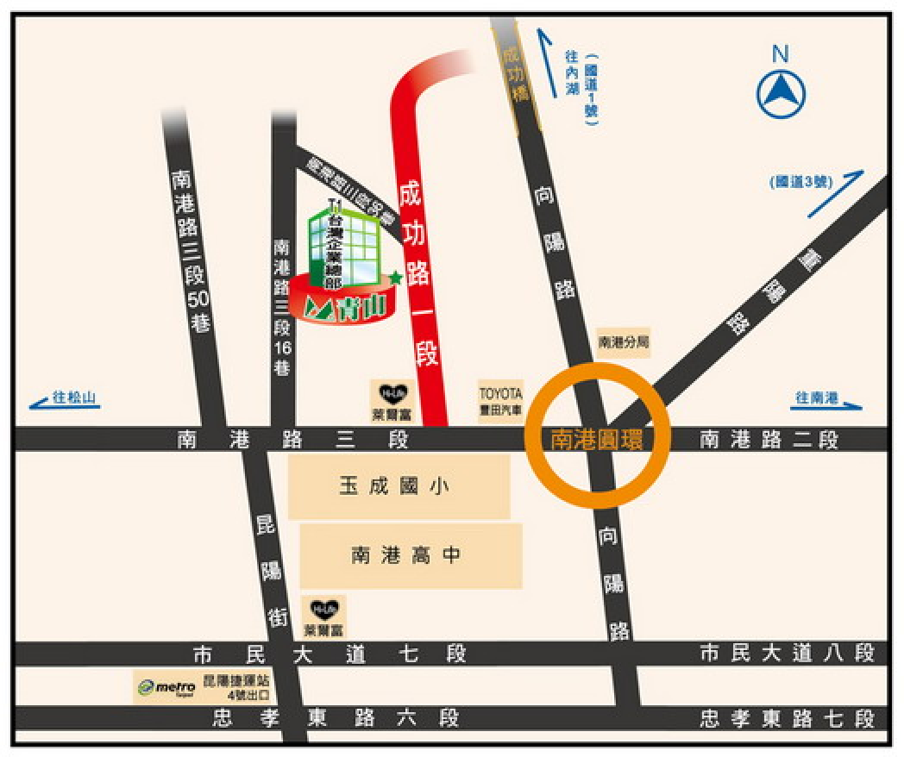

交通資訊
聯營公車
203‧276‧28‧306‧311(東湖線)‧311(新台五線)‧51‧605‧605(副) ‧605(新台五線) ‧629 ‧629(直達車) ‧668
捷運 - 昆陽站
昆陽站３號及４號出口，步行約８分鐘可到達。
青山工程顧問股份有限公司
- 地址：台北市成功路一段32號8樓之6
- 電話：02-2789-3988

203‧276‧28‧306‧311(東湖線)‧311(新台五線)‧51‧605‧605(副) ‧605(新台五線) ‧629 ‧629(直達車) ‧668
昆陽站３號及４號出口，步行約８分鐘可到達。